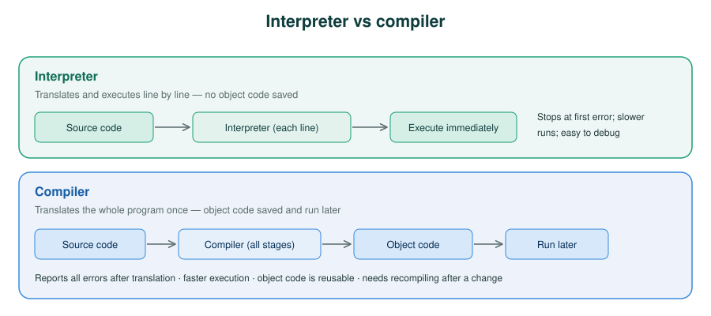
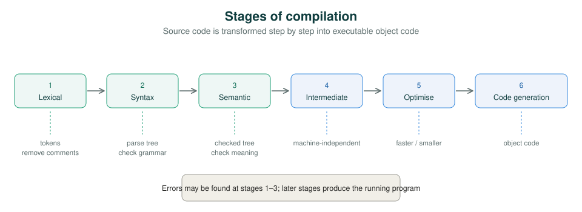
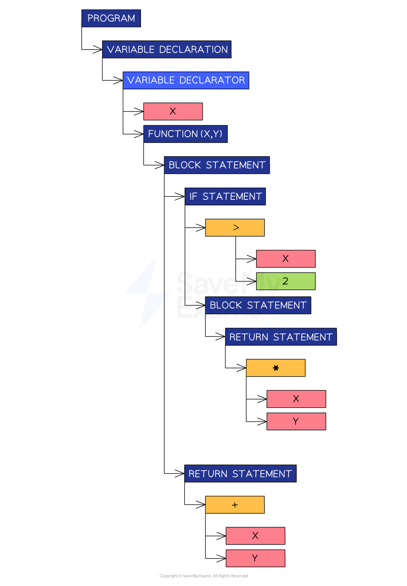
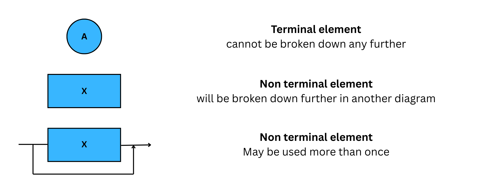
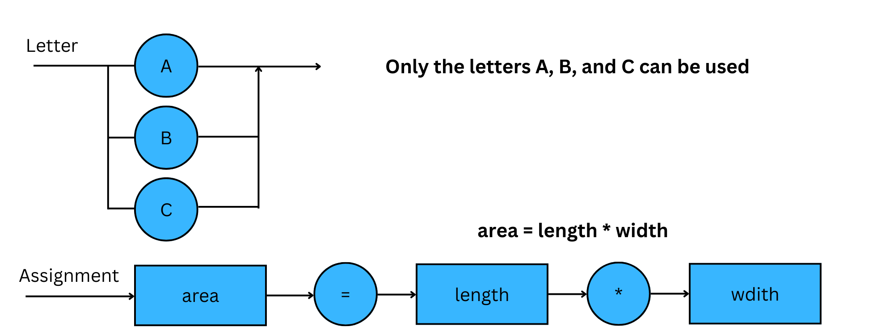
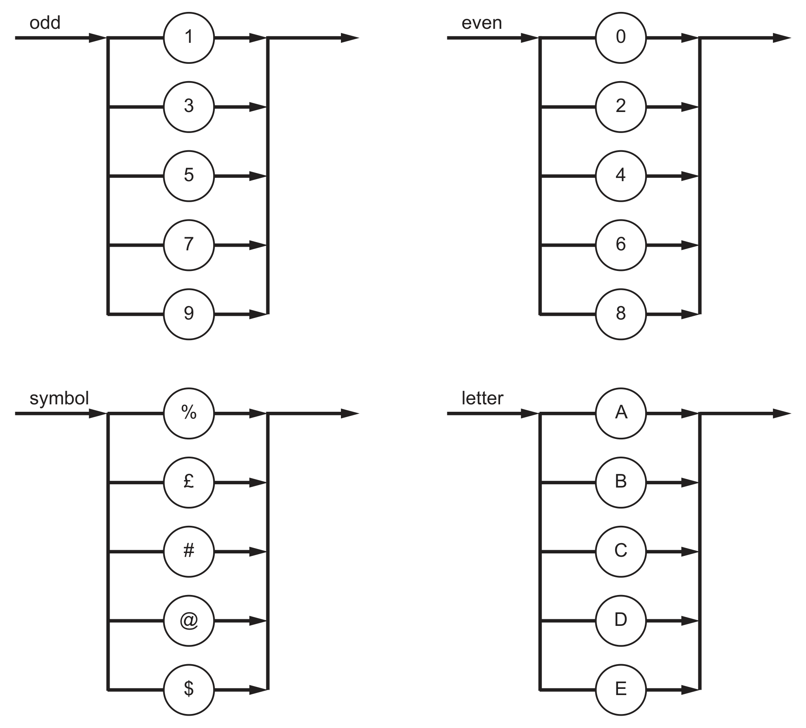
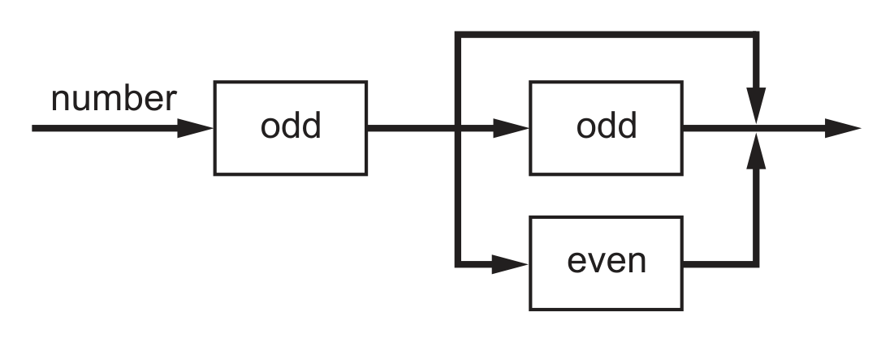
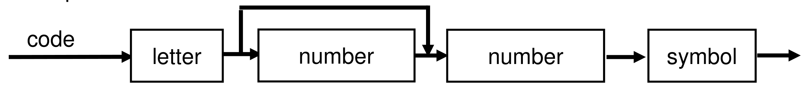
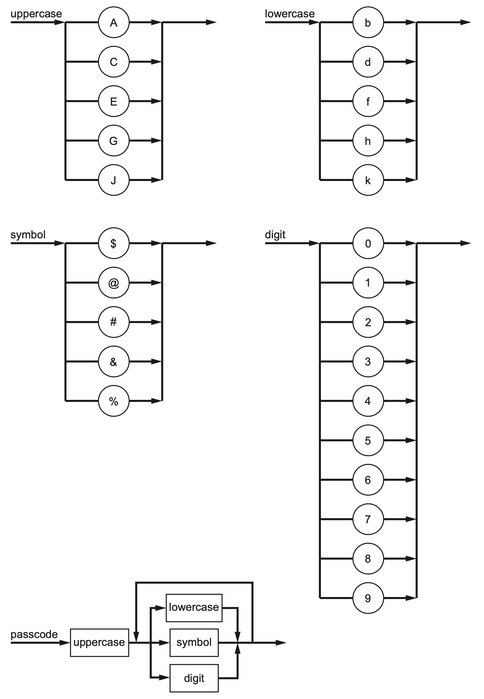
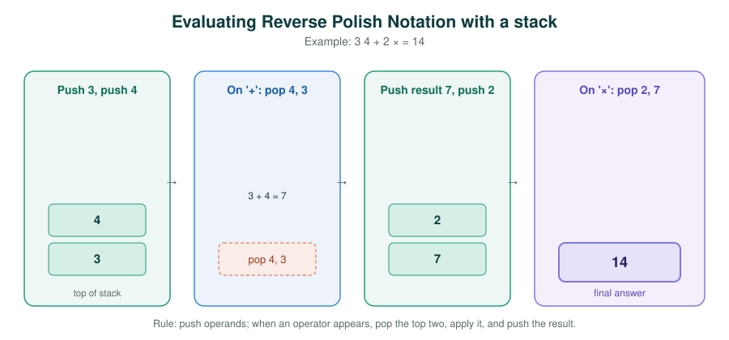

Translation software
Translation software converts a program written in a high-level language into machine code that the processor can execute. Two approaches are examined:
- An interpreter translates and executes the source code one line at a time and does not produce a separate translated file.
- A compiler translates the whole program through a series of stages into object/machine code before execution.

Interpreter execution
What is an interpreter?
- An interpreter is a type of translator that executes high-level code line by line
- It does not convert the entire program into a separate machine code file
How does it work?
- The source code is read, analysed, and executed one line at a time
- If the line is syntax-error free it is executed immediately; no standalone executable is stored
- If an error is found, the program halts and an error message is reported at once
- Each line must be translated every time the program runs, including lines that execute repeatedly (for example inside a loop) — this is why interpreted execution is slower
| Feature | Explanation |
|---|---|
| No translated file | It does not generate a standalone .exe or machine code file |
| Immediate execution | Runs the code as it is interpreted |
| Slower execution | Each line is translated every time the program runs |
| Useful for development | Good for testing and debugging during coding |
| Stops on first error | Detects and reports errors as they occur |
Example use cases
- Used in educational tools, like Python shells or BASIC interpreters
- Helpful for rapid prototyping or when frequent changes are made
Exam-focus note ★ Only one past-paper question in the bank examines this objective directly (2025 Summer P31 Q6). Index tags that also attach BNF to that question are incorrect — the question is interpreter-only.
Describe the process of executing a program using an interpreter. [4]
Answer
| Question | Answer | Marks |
|---|---|---|
| 6 | One mark for each mark point (Max 4) MP1: The interpreter translates the source code one line at a time MP2: If the line is syntax error free it is executed MP3: It is not stored in executable format MP4: If an error is found, the program halts with an error message MP5: Each line must be translated every time it is run, including lines running multiple times for example in loops |
4 |
Stages of compilation
What is compilation?
- Compilation is a process that translates a program written in a high-level programming language into machine code
- Only machine code can be executed by a computer
- The stages examined are lexical analysis → syntax analysis → code generation → optimisation; semantic analysis, a symbol table and intermediate code support these stages

Lexical analysis
- In A Level Computer Science, lexical analysis means studying the words or vocabulary of a language
- It is the first stage of compilation: whitespace and comments are removed and the remaining source code is broken into a series of tokens
- Each token is categorised and assigned a type; identifiers are stored in a symbol table
- If the lexical analyser finds invalid tokens it generates an error; acceptable data passes to the syntax analyser
- Tokens represent small meaningful units in the programming language, such as:
- Keywords
- var, const, function, for, while, if
- Identifiers
- Variable names, function names
- Operators
- ‘+’, ‘++’, ‘-’, ‘*’
- Separators
- ‘,’ ‘;’, ‘{’, ‘}’, ‘(’, ‘)’
- Keywords
- For example, if the following code is being compiled:
var x = function(x,y) {
if(x>2) {
return x*y;
}
return x+y;
}
- The result of lexical analysis is a token table
| Token | Type | |
|---|---|---|
| 1 | var | Keyword |
| 2 | x | Identifier |
| 3 | = | Operator |
| 4 | function | Keyword |
| 5 | ( | Separator |
| 6 | x | Identifier |
| 7 | , | Separators |
| 8 | y | Identifier |
| 9 | ) | Separator |
| 10 | { | Separator |
| 11 | return | Keyword |
| 12 | x | Identifier |
| 13 | * | Operator |
| 14 | y | Identifier |
| 15 | ; | Separator |
| 16 | } | Separator |
Syntax analysis
- Now that tokens have been identified, syntax analysis makes sure they all adhere to the syntax rules of the programming language
- It is the second stage, taking the token stream from the lexical analyser and parsing the code against the rules of the language
- A symbol, e.g. ‘$’ could be a valid token but not a valid character according to particular programming languages
- The dollar symbol would be flagged as breaking the syntax rules
- Other syntax errors programmers commonly make include mismatched parentheses or missing semicolons; syntax errors are reported
- If the code passes the syntax analysis, the compiler creates a parse tree / Abstract Syntax Tree (AST)
- An AST is a graph-based representation of the code being compiled and is an efficient way to represent the code for the next step
Example abstract syntax tree
- For the same code as above, the following abstract syntax tree can be created

Abstract syntax tree
Code generation
- This step takes the AST / intermediate representation and traverses it to generate object code that can be executed by the computer — it converts the intermediate representation into an executable form
Optimisation
- This step modifies the code to make it more efficient without changing its functionality
- It identifies and removes redundant code, simplifies expressions or reorders code so that memory/storage use, CPU time, power consumption and execution time are minimised
- A common optimisation action is removing duplicate code
- If an ‘add’ function is written twice in the source code, a sophisticated compiler will notice this and include it only once in the object code
Semantic analysis, the symbol table and intermediate code ★
- Semantic analysis — checks that the code is meaningful: every identifier is declared, the types of operands match, and a variable is not used before it is given a value
- Symbol table — records each identifier with its type, scope and address; it is built during lexical and syntax analysis and consulted by the later stages
- Intermediate code — a machine-independent representation produced before code generation, which the optimiser can rewrite without targeting a specific processor
Explain what is meant by lexical analysis during program compilation. [4]
Answer
| Question | Answer | Marks |
|---|---|---|
| 8 | One mark per mark point (Max 4) • MP1: It is the first stage of compilation • MP2: White space and comments are removed • MP3: It takes modified source code and breaks it into a series of tokens • MP4: Each token is categorised and assigned types • MP5: Identifiers are stored in a symbol table • MP6: If the lexical analyser finds invalid tokens, it generates an error • MP7: Acceptable data from the lexical analyser passes to the syntax analyser |
4 |
Draw one line to connect each stage of compilation to its most appropriate description. [4]
| Stage of compilation | Description | |
|---|---|---|
| Lexical analysis | minimising a program’s execution time and memory requirement | |
| Syntax analysis | converting an intermediate representation of source code into an executable form | |
| Code generation | converting a sequence of characters into a sequence of tokens | |
| Optimisation | directly executing instructions written in a scripting language | |
| using parsing algorithms to interpret the meaning of a sequence of tokens |
Answer
One mark for each correct line connecting one stage of compilation to a description

| Stage of compilation | Description |
|---|---|
| Lexical analysis | converting a sequence of characters into a sequence of tokens |
| Syntax analysis | using parsing algorithms to interpret the meaning of a sequence of tokens |
| Code generation | converting an intermediate representation of source code into an executable form |
| Optimisation | minimising a program’s execution time and memory requirement |
Lexical analysis and syntax analysis are stages in the compilation of a program.
(a) Identify two other stages that take place during the compilation of a program. [2]
(b) Outline the purpose of syntax analysis. [2]
Answer
| Question | Answer | Marks |
|---|---|---|
| 2(a) | One mark per point • Code generation • Optimisation |
2 |
| 2(b) | One mark per point (Max 2) • It checks that the code matches the grammar of the language // It checks that the tokens conform with the rules of the programming language • Syntax errors are reported • A parse tree is produced |
2 |
Syntax rules and BNF
- When writing programs, you must follow a set of strict rules known as syntax — the structure that defines how code must be written.
- Just like spoken languages have grammar rules, programming languages have syntax rules
- Each language has its own syntax, e.g. Python uses indentation, Java uses semicolons
- Programs are first written in source code (a high-level language like Python, Java, etc.)
- To run the program, this source code must be translated into machine code
- For translation to work, syntax must be precisely defined to avoid ambiguity
- Translators (compilers or interpreters) rely on these rules to correctly convert the program into a form the CPU can understand
Regular expressions and meta-languages
- Regular expressions are used to describe simple patterns in text or syntax
- Many programming constructs (like variable names or simple statements) can be defined using regular expressions
- However, some aspects of a programming language are too complex for regular expressions alone
- When regular expressions aren’t enough, we use a meta-language — a language used to describe the structure of another language
- The most common examples are Backus-Naur Form (BNF) and syntax diagrams
- These allow us to define full grammar rules, nested structures and hierarchical syntax
What is Backus-Naur Form (BNF)?
- BNF is a meta-language, a way of writing rules that define the syntax of programming languages or data structures
- BNF is used to describe formal grammar, define how statements and expressions are structured, and ensure syntax rules are unambiguous and machine-readable
- BNF uses a set of rules made up of:
| Term | Meaning |
|---|---|
| Non-terminal | A category or component (e.g. <digit>), written inside angle brackets |
| Terminal | An actual value or symbol (e.g. 0, 1, +, if) |
| ::= | “Is defined as”, separates the name from its definition |
| ** | ** |
Example 1
<digit> ::= 0 | 1 | 2 | 3 | 4 | 5 | 6 | 7 | 8 | 9
<number> ::= <digit> | <digit> <number>
<digit>is defined as any single digit 0–9<number>is defined as a single digit, or a digit followed by another number (i.e. multiple digits)
Example 2
<number>contains one or more digits- BNF for
<number>and use it to define<IDcode>, which consists of a<number>followed by either a<letter>or another<number>
<number> ::= <digit> | <number><digit>
<IDcode> ::= <number><letter> | <number><number>
-
Recursive definition of one or more items
-
Use of
|for choice -
Application to a second rule with multiple components
Syntax diagram conventions ★
-
Terminal — drawn as a circle or oval, and written literally in BNF, e.g.
+,if,0 -
Non-terminal — drawn as a rectangle and defined by another rule; in BNF it is written inside angle brackets, e.g.
<digit> -
Sequence — symbols lying on a single path are read left to right in the order they must appear
-
Choice — parallel paths that leave and rejoin the same points are alternatives, equivalent to
|in BNF -
Iteration — a path that loops back allows the preceding symbol or symbols to repeat
-
Recursion in BNF — repetition is expressed by referring to the rule itself, e.g.
<number> ::= <digit> | <number><digit>
What is a syntax diagram?
- A syntax diagram is a graphical representation of BNF (meta-language)
- It uses symbols to map directly to the structure of BNF
- The symbols used are:


The following syntax diagrams show the syntax of:
- a variable
- an unsigned integer
- a letter
- a digit
- an operator
- an assignment statement

(a) The following assignment statements are invalid. State the reason in each case. [2]
X1 = Y2 – 12
Reason:
Z = Y12 + Z1
Reason:
(b) Complete the Backus-Naur Form (BNF) for the syntax diagrams shown.
<letter> has been completed for you. [5]
<variable> ::=
<unsigned_integer> ::=
<letter> ::= X | Y | Z
<digit> ::=
<operator> ::=
<assignment_statement> ::=
© The syntax of an assignment statement is changed to allow each of the variables on the right-hand side of the ‘=’ symbol to be either a variable or an unsigned integer.
©(i) Draw a syntax diagram for the new syntax of the assignment statement. [3] ©(ii) Write the Backus-Naur Form (BNF) for your syntax diagram. [3]
Answer
| Question | Answer | Marks |
|---|---|---|
| 4a | • An unsigned integer, 12, is used instead of the last variable // 12 is not a valid variable• The variable Z is not a valid variable / missing an unsigned integer after the Z |
2 |
4b answer:
<variable> ::= <letter><unsigned_integer>
<unsigned_integer> ::= <digit>|<digit><digit>
<digit> ::= 1 | 2 | 3
<operator> ::= + | - | *
<assignment_statement> ::= <variable> =
<variable><operator><variable>
| Question | Answer | Marks |
|---|---|---|
| 4b | One mark per bullet point | 5 |
4c(i) answer:

| Question | Answer | Marks |
|---|---|---|
| 4c(i) | • One mark adding both boxes…(unsigned integer & unsigned integer) • One mark for correct position(s) and connector(s) … • One mark … rest correct |
3 |
4c(ii) answer:
<assignment_statement>::=<variable>=
<variable><operator><variable>
|<variable><operator><unsigned_integer>
|<unsigned_integer><operator><variable>
|<unsigned_integer><operator><unsigned_integer>
or:
<assignment_statement>::=<variable>= <variable><operator><variable>|<variable><operator>
<unsigned_integer>|<unsigned_integer><operator><variable>
|<unsigned_integer><operator><unsigned_integer>
or:
<operand>::=<variable>|<unsigned_integer>
<assignment_statement>::=<variable>=
<operand><operator><operand>
| Question | Answer | Marks |
|---|---|---|
| 4c(ii) | Max three • One mark for <assignment_statement>::=<variable>=• One mark two or three correct options or two marks if all four options correct • or: One mark for each section |
3 |
Several syntax diagrams are shown.


(a) State why each number is invalid for the given syntax diagrams. [2]
21 …
123 …
(b) Complete the Backus-Naur Form (BNF) for the given syntax diagrams. [2]
<symbol> ::=
<number> ::=
©(i) A new syntax rule, code, is required. It must begin with a letter, followed by one or two numbers, and end with a symbol. Draw a syntax diagram for code. [3] ©(ii) Write the BNF for code. [2]
Answer
| Question | Answer | Marks |
|---|---|---|
| 7(a) | One mark per mark point (Max 2) • MP1 21 — a number must begin with an odd digit, 2 is even• MP2 123 — a number can only be one or two digits in length not three |
2 |
| 7(b) | One mark per mark point (Max 2). Completed BNF shown below. | 2 |
| 7©(i) | One mark per mark point (Max 3) • letter, number and symbol all included in correct order: letter first, followed by number, finishing with symbol • provision for one or two numbers including relevant connectors • all other connections and label correct and no additional data  |
3 |
| 7©(ii) | One mark per correct line (Max 2). Answers shown below. | 2 |
7(b) answer:
<symbol> ::= % | £ | # | @ | $
<number> ::= <odd> | <odd><even> | <odd><odd>
7©(ii) answer:
<code> ::= <letter><number><symbol> | <letter><number><number><symbol>
OR
<code> ::= <letter><number><number><symbol> | <letter><number><symbol>
Alternative answer:
<digits> ::= <number> | <number><number>
<code> ::= <letter><digits><symbol>
Several syntax diagrams are shown.

(a) State why each passcode is invalid for the given syntax diagrams. [2]
#Jd7— Reason: …C%6A— Reason: …
(b) Complete the Backus-Naur Form (BNF) for <uppercase> and <passcode>. [4]
<uppercase> ::= ...............................................................................
<passcode> ::= ...............................................................................
Answer
| Question | Answer | Marks |
|---|---|---|
| 7(a) | #Jd7: must begin with a member of the group uppercase // cannot begin with a symbolC%6A: the fourth character cannot be a member of the group uppercase // the fourth character must be either a symbol, digit or lowercase |
2 |
| 7(b) | One mark per mark point; completed BNF shown below. | 4 |
7(b) answer:
<uppercase> ::= A | C | E | G | J
<passcode> ::= <uppercase><code>
<code> ::= <lowercase>|<symbol>|<digit>
|<lowercase><code>|<symbol><code>|<digit><code>
Expression evaluation and RPN
What is RPN?
- Reverse Polish Notation (RPN) is a method of writing mathematical expressions where the operator comes after the operands
- This is also known as postfix notation
- Infix:
3 + 4 - RPN:
3 4 +
- Infix:
Why use RPN?
- RPN provides an unambiguous method of representing an expression, read from left to right
- No need for brackets: the order of operations is determined by position, not parentheses
- No need for rules of precedence / BODMAS
- Easier for computers to evaluate using a stack
How RPN works
- RPN uses a Stack to evaluate expressions
- Read the expression from left to right, one item at a time
- Check each element to see if it is an operator or a value
- When a number/value is read, push it onto the stack
- When an operator is read:
- Pop the last two values from the stack
- Apply the operator
- Push the result back onto the stack
- Repeat until the expression ends; the final result is at the top of the stack

Example: evaluate 3 4 + 2 ×
| Step | Action | Stack |
|---|---|---|
Read 3 |
Push to stack | 3 |
Read 4 |
Push to stack | 3 4 |
Read + |
Add 3 + 4 → 7 | 7 |
Read 2 |
Push to stack | 7 2 |
Read × |
Multiply 7 × 2 → 14 | 14 |
- Final result:
14
Example: convert this infix expression to RPN
(7 − 2 + 8) / (9 − 5)
- Split the expression into parts:
- Left-hand side:
(7 − 2 + 8) - This becomes
( (7 − 2) + 8 ) - Which in RPN is
7 2 − 8 + - Right-hand side:
(9 − 5)→ in RPN9 5 − - Combine with the division →
7 2 − 8 + 9 5 − ÷ - RPN follows the evaluation order naturally, so there is no need for brackets or precedence rules:
- Work from inside brackets out
- Convert each sub-expression
- Add the operator after its operands
Converting infix to RPN ★
- Precedence and associativity — brackets first, then
^, then*and/, then+and-; operators of equal precedence are taken left to right - Operator stack method — output operands as they are read, push operators, pop an operator whenever one of lower or equal precedence arrives, and pop all remaining operators at the end
- Brackets — push
(, and on)pop operators until(is reached; neither bracket is written in the output - Evaluation order — for
-and/the value popped second is the left operand, soa b -meansa - b
Other uses of a stack
- Recursion
- Implementation of ADTs, e.g. linked lists
- Procedure calls
- Interrupt handling (storing the contents of registers)
- A binary tree can also be used for RPN evaluation — tree traversal allows both infix and postfix to be evaluated
Summary
| Concept | Description |
|---|---|
| RPN (Postfix) | Operators follow operands |
| Stack | Used to store and evaluate values |
| Evaluation method | Push numbers, pop and evaluate on operator |
| Benefits | No brackets, no ambiguity, easy to compute with stack |
Part of a program’s calculations uses the integer variables j, k, m, n and p.
j = 3
k = 2
m = 10
n = (j + k) / (j - k)
p = m * (m - j * k)
(a) Write the Reverse Polish Notation (RPN) for the expression: [2]
(j + k) / (j - k)
(b)(i) Show the changing contents of the stack as the value for p is calculated from its RPN expression: [4]
m m j k * - *

(b)(ii) Describe the main steps in the evaluation of this RPN expression using a stack. [4]
© State two other uses of a stack. [2]
Answer
| Question | Answer | Marks |
|---|---|---|
| 5a | One mark for each in order:j k + j k - /• j k +• j k - / |
2 |
| 5b(i) | Stack contents (1 mark per column, max 4): | 4 |

| Step | m | m | j | k | * | - | * |
|---|---|---|---|---|---|---|---|
| Stack (top to bottom) | 10 | 10, 10 | 3, 10, 10 | 2, 3, 10, 10 | 6, 10, 10 | 4, 10 | 40 |
| Question | Answer | Marks |
|---|---|---|
| 5b(ii) | Any four from (max 4, max 3 for generic answer only): • Working from left to right in the expression • PUSH 10/m onto the stack • PUSH the following numbers (10/m, 3/j, 2/k) onto the stack • When the first operator ‘*’ is reached • POP the top two numbers, 2/k and 3/j • Apply the operation • PUSH result back onto stack • Continue to the end of the expression |
4 |
| 5c | Any two from: • Recursion • Implementation of ADTs e.g. linked lists • Procedure calls • Interrupt handling (storing contents of registers etc) |
2 |
(a) Write this infix expression in Reverse Polish Notation (RPN). [2]
16 + ((9 – 7) / (18 + 6))
(b) Write this RPN expression in infix form. [3]
6 15 + 20 3 - - 27 9 * /
© The RPN expression
c a b - * b c + / d *
is to be evaluated, where:
a = 8, b = 2, c = 10 and d = 18. [4]

Answer
| Question | Answer | Marks |
|---|---|---|
| 6(a) | One mark per mark point (Max 2): MP1 16 9 7 –; MP2 18 6 + / +. Final correct expression: 16 9 7 – 18 6 + / +. |
2 |
| 6(b) | One mark per mark point (Max 3): MP1 (6 + 15) // 6 + 15; MP2 - (20 – 3); MP3 / (27 * 9) and the pair of brackets around the whole numerator. Final correct expression: ((6 + 15) - (20 – 3)) / (27 * 9) // (6 + 15 - (20 – 3)) / (27 * 9). |
3 |
| 6© | One mark per ring (Max 3). One mark for the interim totals (60) and (5). Stack evolves: 10; 10, 8; 10, 8, 2; 10, 6; 60; 60, 2; 60, 2, 10; 60, 12; 5; 5, 18; 90.  Guidance: Do not allow operators in stacks. Do not allow letters in stacks. Values in shaded areas are necessary to award the marks in the rings. |
4 |
(a)(i) Explain why Reverse Polish Notation (RPN) is used to carry out the evaluation of expressions. [2]
(a)(ii) Identify, with reasons, a data structure that could be used to evaluate an expression in RPN. [2]
(b) Write the infix expression (a − b) * (a + c) / 7 in RPN. [1]
© Write the RPN expression a b / 4 * a b + - as an infix expression. [1]
(d) Evaluate the RPN expression a b + c d / / given that a = 17, b = 3, c = 48, d = 12. Show your working. [2]
Answer
| Question | Answer | Marks |
|---|---|---|
| 4(a)(i) | One mark for each correct marking point (Max 2) • Reverse Polish Notation provides an unambiguous method of representing an expression • … reading from left to right • … without the need to use brackets • … with no need for rules of precedence / BODMAS |
2 |
| 4(a)(ii) | One mark for identification of the data structure, one mark for a sensible reason Either: Structure: stack — the operands are popped from the stack in the reverse order to how they were pushed Or: Structure: Binary tree — a (binary) tree allows both infix and postfix to be evaluated (tree traversal) |
2 |
| 4(b) | a b - a c + * 7 / |
1 |
| 4© | a / b * 4 – (a + b) |
1 |
| 4(d) | 1 mark for correct structure, 1 mark for correct substitution(a + b) / (c / d)(17 + 3) / (48 / 12) |
2 |
Exam Question Index
| Sub-question | Exam point | Source |
|---|---|---|
| P31 Q6 | How an interpreter executes a program | 2025 Summer P31 Q6 |
| P33 Q7(a) | Stages of compilation – optimisation | 2025 Winter P33 Q7(a) |
| P32 Q8 | Stages of compilation – lexical analysis | 2025 Summer P32 Q8 |
| P33 Q8 | Stages of compilation – syntax analysis | 2025 Summer P33 Q8 |
| P31 Q8(a) | Stages of compilation – lexical analysis | 2025 Winter P31 Q8(a) |
| P32 Q8(a) | Stages of compilation – optimisation | 2025 Winter P32 Q8(a) |
| P32 Q2(a) | Stages of compilation – identify stages | 2022 Winter P32 Q2(a) |
| P32 Q2(b) | Stages of compilation – syntax analysis | 2022 Winter P32 Q2(b) |
| P31 Q4 | Stages of compilation – matching stage to description | 2022 Winter P31 Q4 |
| P31 Q7(a) | BNF – invalid passcode reason | 2025 Summer P31 Q7(a) |
| P31 Q7(b) | BNF – complete BNF | 2025 Summer P31 Q7(b) |
| P32 Q9(a) | BNF – invalid variable reason | 2025 Summer P32 Q9(a) |
| P32 Q9(b) | BNF – operator rule | 2025 Summer P32 Q9(b) |
| P32 Q9© | BNF – complete syntax diagram | 2025 Summer P32 Q9© |
| P32 Q9(d) | BNF – valid variable example | 2025 Summer P32 Q9(d) |
| P33 Q9(a) | BNF – invalid passcode reason | 2025 Summer P33 Q9(a) |
| P33 Q9(b) | BNF – complete BNF | 2025 Summer P33 Q9(b) |
| P33 Q9© | BNF – complete syntax diagram | 2025 Summer P33 Q9© |
| P32 Q7(a) | BNF – invalid number reason | 2024 Winter P32 Q7(a) |
| P32 Q7(b) | BNF – complete BNF | 2024 Winter P32 Q7(b) |
| P32 Q7©(i) | BNF – draw syntax diagram | 2024 Winter P32 Q7©(i) |
| P32 Q7©(ii) | BNF – write BNF | 2024 Winter P32 Q7©(ii) |
| P31 Q10(a) | BNF – complete BNF | 2024 Winter P31 Q10(a) |
| P31 Q10(b)(i) | BNF – draw syntax diagram | 2024 Winter P31 Q10(b)(i) |
| P31 Q10(b)(ii) | BNF – write BNF | 2024 Winter P31 Q10(b)(ii) |
| P32 Q3(a) | BNF – valid/invalid variables | 2023 Summer P32 Q3(a) |
| P32 Q3(b) | BNF – complete BNF | 2023 Summer P32 Q3(b) |
| P32 Q3©(i) | BNF – valid registration example | 2023 Summer P32 Q3©(i) |
| P32 Q3©(ii) | BNF – draw syntax diagram | 2023 Summer P32 Q3©(ii) |
| P31 Q6(a) | BNF – valid/invalid passwords | 2023 Summer P31 Q6(a) |
| P31 Q6(b) | BNF – complete BNF | 2023 Summer P31 Q6(b) |
| P31 Q6© | BNF – draw syntax diagram | 2023 Summer P31 Q6© |
| P32 Q4(a) | BNF – invalid assignment reason | 2022 Summer P32 Q4(a) |
| P32 Q4(b) | BNF – complete BNF | 2022 Summer P32 Q4(b) |
| P32 Q4©(i) | BNF – draw syntax diagram | 2022 Summer P32 Q4©(i) |
| P32 Q4©(ii) | BNF – write BNF | 2022 Summer P32 Q4©(ii) |
| P31 Q4(a) | BNF – BNF for character | 2021 Winter P31 Q4(a) |
| P31 Q4(b)(i) | BNF – valid password example | 2021 Winter P31 Q4(b)(i) |
| P31 Q4(b)(ii) | BNF – BNF for password | 2021 Winter P31 Q4(b)(ii) |
| P32 Q6(a) | RPN – infix to RPN | 2026 Summer P32 Q6(a) |
| P32 Q6(b) | RPN – RPN to infix | 2026 Summer P32 Q6(b) |
| P32 Q6© | RPN – evaluate with stack | 2026 Summer P32 Q6© |
| P31 Q7(a) | RPN – infix to RPN | 2026 Summer P31 Q7(a) |
| P31 Q7(b) | RPN – RPN to infix | 2026 Summer P31 Q7(b) |
| P31 Q7© | RPN – evaluate with stack | 2026 Summer P31 Q7© |
| P33 Q7(a) | RPN – outline stack evaluation | 2026 Summer P33 Q7(a) |
| P33 Q7(b) | RPN – infix to RPN | 2026 Summer P33 Q7(b) |
| P33 Q7© | RPN – evaluate with stack | 2026 Summer P33 Q7© |
| P33 Q7(b) | RPN – infix to RPN | 2025 Winter P33 Q7(b) |
| P33 Q7© | RPN – evaluate with stack | 2025 Winter P33 Q7© |
| P31 Q8(b) | RPN – infix to RPN | 2025 Winter P31 Q8(b) |
| P31 Q8© | RPN – evaluate with stack | 2025 Winter P31 Q8© |
| P32 Q8(b) | RPN – RPN to infix | 2025 Winter P32 Q8(b) |
| P32 Q8© | RPN – evaluate with stack | 2025 Winter P32 Q8© |
| P31 Q5(a) | RPN – RPN to infix | 2024 Summer P31 Q5(a) |
| P31 Q5(b) | RPN – infix to RPN | 2024 Summer P31 Q5(b) |
| P31 Q5© | RPN – evaluate with stack | 2024 Summer P31 Q5© |
| P32 Q5(a) | RPN – infix to RPN | 2024 Summer P32 Q5(a) |
| P32 Q5(b) | RPN – evaluate with stack | 2024 Summer P32 Q5(b) |
| P32 Q5© | RPN – RPN to infix | 2024 Summer P32 Q5© |
| P32 Q6(a) | RPN – evaluate with stack | 2023 Winter P32 Q6(a) |
| P32 Q6(b) | RPN – explain stack evaluation | 2023 Winter P32 Q6(b) |
| P31 Q9(a)(i) | RPN – RPN to infix | 2023 Winter P31 Q9(a)(i) |
| P31 Q9(a)(ii) | RPN – evaluate with stack | 2023 Winter P31 Q9(a)(ii) |
| P31 Q9(b) | RPN – explain stack evaluation | 2023 Winter P31 Q9(b) |
| P31 Q5(a) | RPN – infix to RPN | 2022 Summer P31 Q5(a) |
| P31 Q5(b)(i) | RPN – evaluate with stack | 2022 Summer P31 Q5(b)(i) |
| P31 Q5(b)(ii) | RPN – describe evaluation steps | 2022 Summer P31 Q5(b)(ii) |
| P31 Q5© | RPN – other uses of a stack | 2022 Summer P31 Q5© |
| P31 Q5(a) | RPN – infix to RPN | 2022 Winter P31 Q5(a) |
| P31 Q5(b)(i) | RPN – RPN to infix | 2022 Winter P31 Q5(b)(i) |
| P31 Q5(b)(ii) | RPN – evaluate | 2022 Winter P31 Q5(b)(ii) |
| P31 Q4(a)(i) | RPN – why RPN is used | 2021 Summer P31 Q4(a)(i) |
| P31 Q4(a)(ii) | RPN – data structure for evaluation | 2021 Summer P31 Q4(a)(ii) |
| P31 Q4(b) | RPN – infix to RPN | 2021 Summer P31 Q4(b) |
| P31 Q4© | RPN – RPN to infix | 2021 Summer P31 Q4© |
| P31 Q4(d) | RPN – evaluate | 2021 Summer P31 Q4(d) |